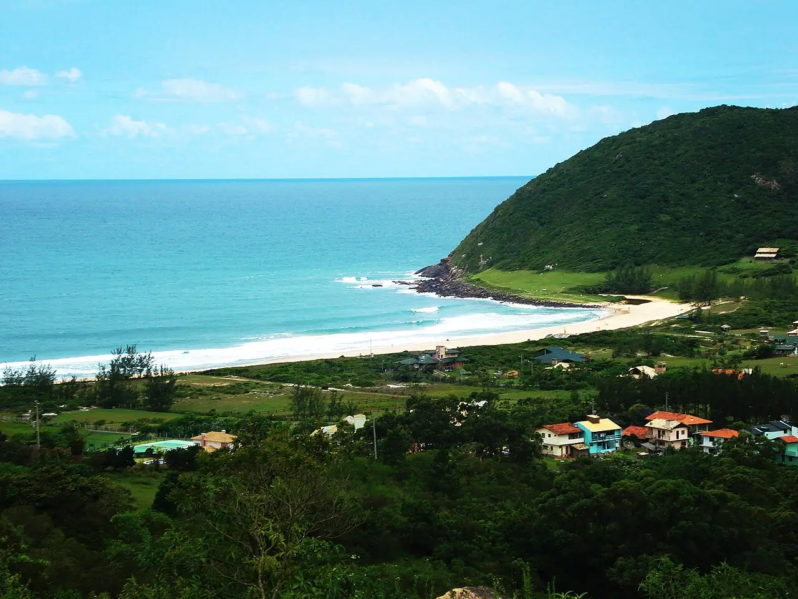

Praia do Silveira — Garopaba
Santa Catarina, Brésil · surf

Plage encadrée de collines vertes au nord de Garopaba, l’une des références du surf dans le sud du Brésil. Les vagues déroulent sur les bancs de sable et le long du coin rocheux.
- Lieu
- Santa Catarina, Brésil
- Niveau
- Intermédiaire
- Activités
- surf
- Type d'eau
- Mer / océan
- Coordonnées
- -28.04, -48.61 (position approximative du secteur)
Dangers à connaître
- Courants d’arrachement quand la houle grossit.
- Rochers au coin de la plage.
- Eau fraîche en hiver austral : prévois une combinaison.
Le conseil d'Ocean Buddy
Par houle de sud, garde un œil sur les courants près des rochers et laisse la priorité aux locaux sur le pic du coin.
Ouvrir dans Ocean Buddy Télécharger sur l'App Store
Source : Fiche Ocean Buddy · septembre 2026 · à vérifier localement.